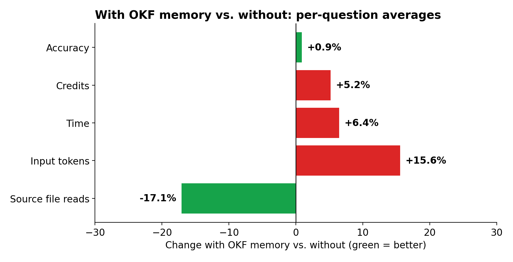
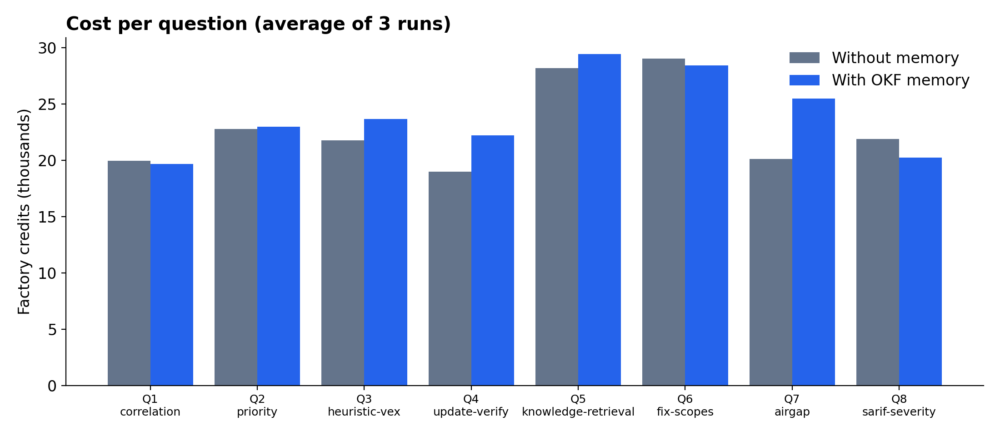
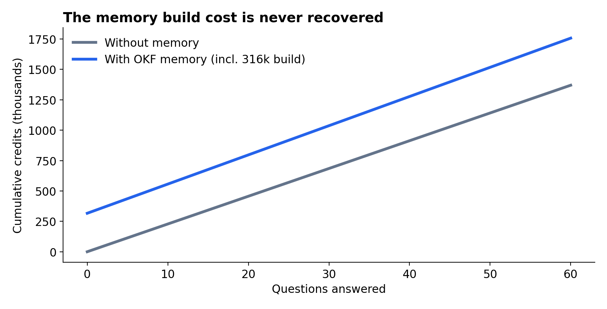

A/B benchmark · October 2026
Does project memory make a
coding agent better?
OKF Agent Memory × Factory Droid, tested on a real TypeScript codebase.
48 runs · blind-graded · all data public
The question
Can a memory layer make Droid faster, cheaper or more accurate?
OKF Agent Memory
- Project knowledge as Markdown files, versioned in git
- Local keyword search (BM25), served to agents over MCP
- Claims large token savings through "search before reading"
What we measured
- Answer accuracy (blind-graded)
- Cost in Factory credits and tokens
- Wall-clock time, turns and file reads
Setup
Two identical clones, one difference: memory
Without memory
- Plain clone of zuwasi/TSscrutinizer
- Tools: Read, Grep, Glob, LS
With OKF memory
- Same clone + 20-concept OKF bundle
- OKF MCP server + OKF's AGENTS.md protocol
- Tools: same + okf_search, okf_show
Droid CLI 0.236 · model gpt-6-sol · headless droid exec · neither setup could edit files
Method
Designed to give memory its best shot
- 8 questions × 3 repetitions × 2 setups = 48 runs, run in alternating order
- Questions cover real internals: finding de-duplication, priority formula, update verification, air-gap guard, and more
- The memory was written by Droid itself in a separate session that never saw the questions. It contained the exact facts asked for.
- Answers were shuffled and blind-graded against 5 key points each and checked against the source
Results
Same accuracy, slightly higher cost
Results
Fewer file reads, but more tokens overall

Per question
Per-question differences are small and go both ways

Why
Why memory didn't help here
1. Droid still checks the code
Memory pointed to the right file sooner. The model then read the source anyway to confirm.
2. The protocol has overhead
AGENTS.md rules and search results added more tokens than the skipped reads saved.
3. The baseline was already fast
Without memory, Droid answered correctly in 3–5 turns and about 20 seconds on a 27-file codebase.
Economics
The 316k-credit build cost is never recovered

Limits
What this test does not show
One repo, one model, code-fact questions. OKF may still pay off for:
- Knowledge that isn't in the code: design rationale, past decisions, incidents
- Large codebases, where finding the right files is expensive
- Weaker or cheaper models that benefit from pre-digested context
- Sharing memory across tools (Claude Code, Cursor) and teammates through git
Bottom line
For code questions on a small repo,
OKF memory gave Droid no benefit.
Same accuracy · about 5% more cost · about 6% slower · one-time build never recovered.
Test it on design-rationale questions or large repos before deciding.
All transcripts, grades, scripts and the memory bundle:
github.com/zuwasi/okf-droid-benchmark
Done by Daniel Liezrowice, ESL Engineering Software Lab
Contact us: eswlab.com/contact-us